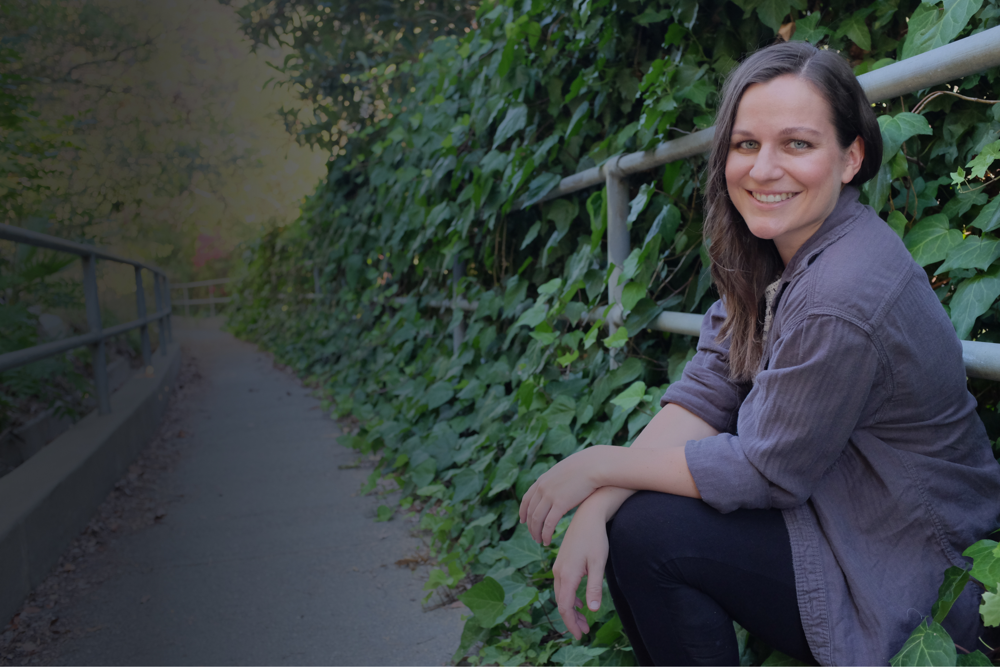

Though design was never in my title, I always sought out ways to bring design and other creativity to my life. Utilizing various mediums both on paper and computer, I’ve always itched for a more creative role.
As you can see, my path to design was not quite linear, but there were clear moments that led me to UX/UI and gave me supplemental skills, which will continue to be a great asset for me, such as marketing, project management and client/account management.
I have always been a creative person who loves problem solving, but unsure of what career was right for me.
Entered Cal State Long Beach majoring in Interior Design: Learned basic skills of proportion, color scheme, drawing and design.
Switched out of design as the recession caused the interior design industry to decline and Graduated CSULB with a BA in Communications.
Worked as a Project Manager in Post Production: Learned to multi-task and work with various clients, but I still desired a more creative job.
Moved back to LA and worked as a Project Manager for Post Production and Marketing: Directed the design of campaigns elements, but wanted design to be my main role.
Finished a 3-month intensive front-end course at Udacity: Enjoyed the design side more than coding; learned about UX and realized it better fit my passion, skills and personality.
Researched for months to find the right UX/UI design program: Enrolled in the design program at Bloc.
Learned numerous skills and created this portfolio website: Excited to start my career as a UX/UI Designer
Starting a project?